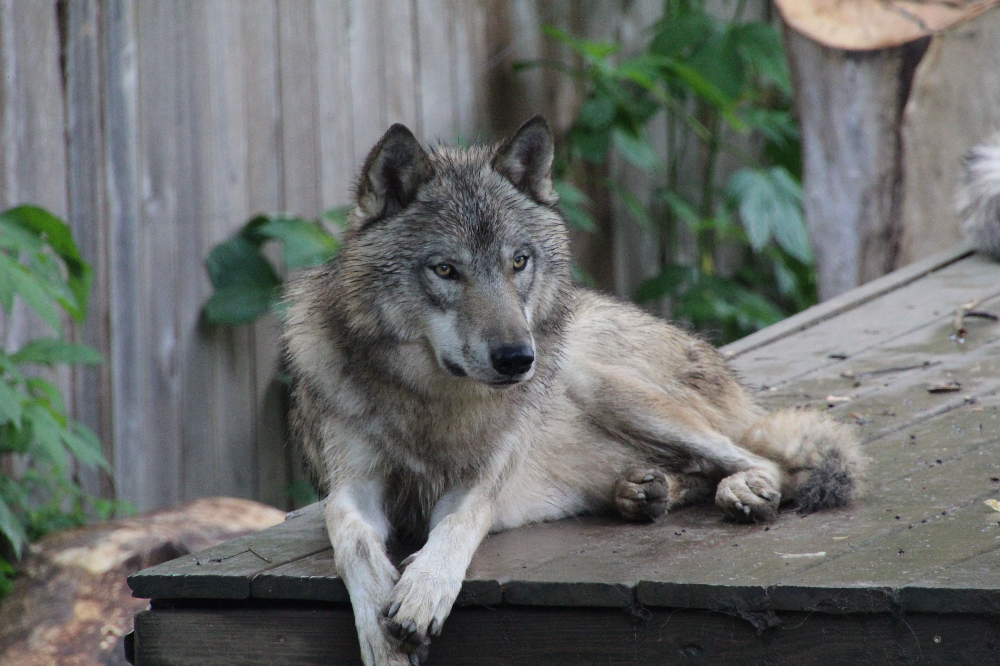
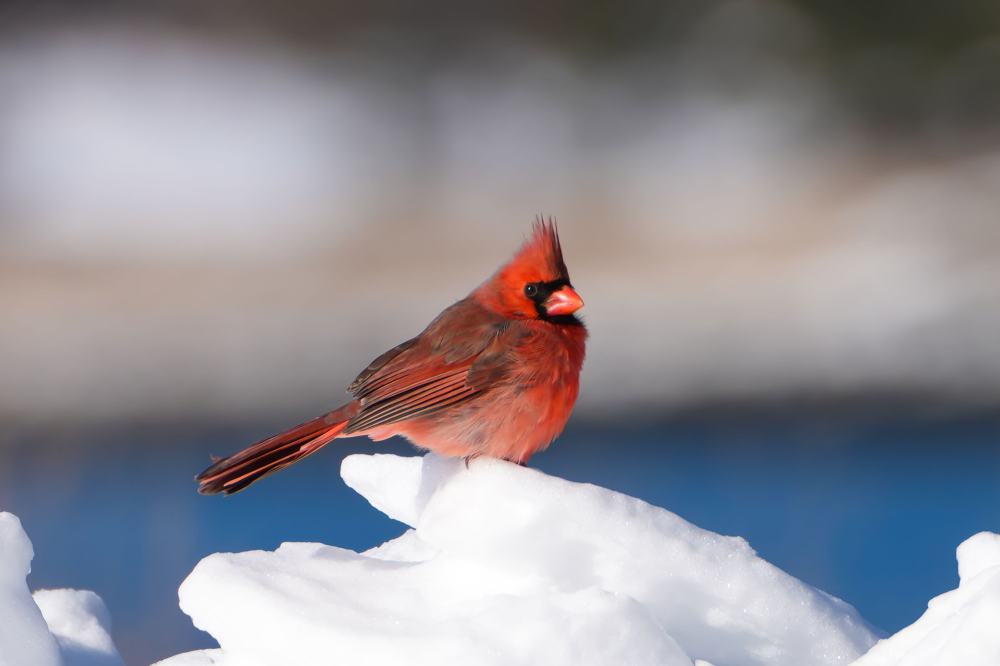
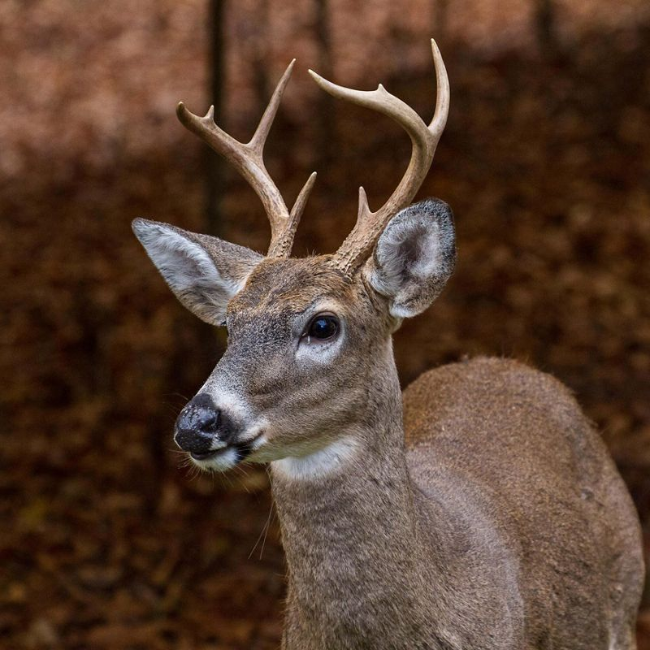
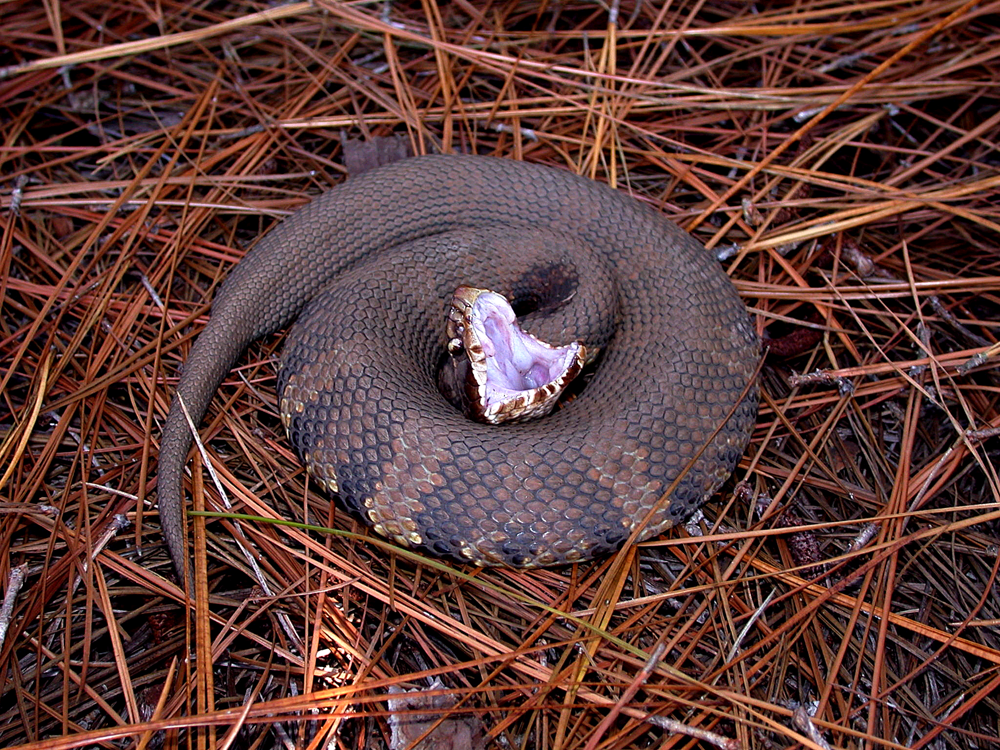
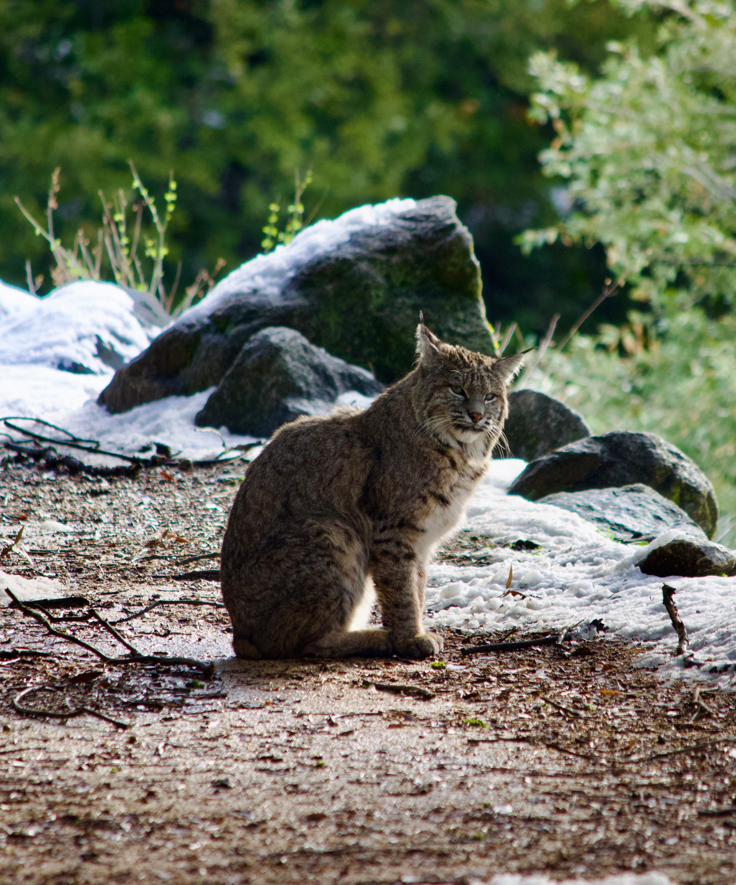
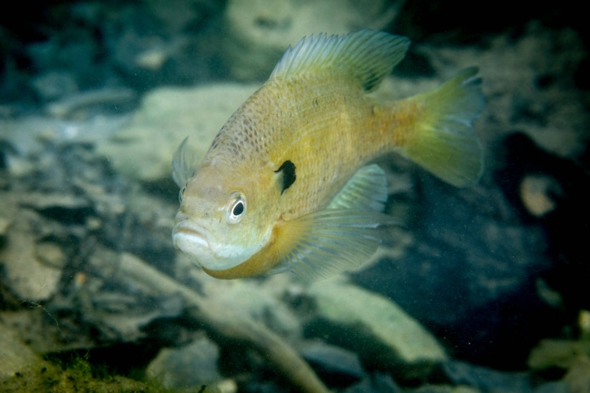
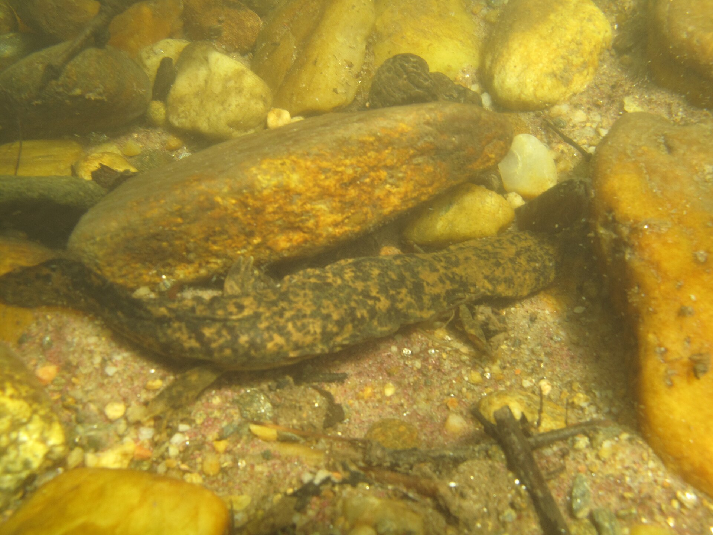

Gray Wolf
Some information about the Gray Wolf. This would include a brief description of the animal, its habitat, and any interesting facts about it.

Here is where the facts about Indiana's climate and terrain would be discussed. This helps explain what types of animals would be found here. You might also see information about the size of the state, population, and the assumed number of animal species that live here. May include some fun facts about things like invasive species, or the relationship between the community and wildlife: example, Animal Control or rescue organizations. Here is where the facts about Indiana's climate and terrain would be discussed. This helps explain what types of animals would be found here. You might also see information about the size of the state, population, and the assumed number of animal species that live here. May include some fun facts about things like invasive species, or the relationship between the community and wildlife: example, Animal Control or rescue organizations.

Some information about the Gray Wolf. This would include a brief description of the animal, its habitat, and any interesting facts about it.

Some information about the Northern Cardinal. This would include a brief description of the animal, its habitat, and any interesting facts about it.

Some information about the White-tailed Deer. This would include a brief description of the animal, its habitat, and any interesting facts about it.

Some information about the Cotton Mouth Snake. This would include a brief description of the animal, its habitat, and any interesting facts about it.

Some information about the Bobcat. This would include a brief description of the animal, its habitat, and any interesting facts about it.

Some information about the Bluegill. This would include a brief description of the animal, its habitat, and any interesting facts about it.

Some information about the Hellbender Salamander. This would include a brief description of the animal, its habitat, and any interesting facts about it.
